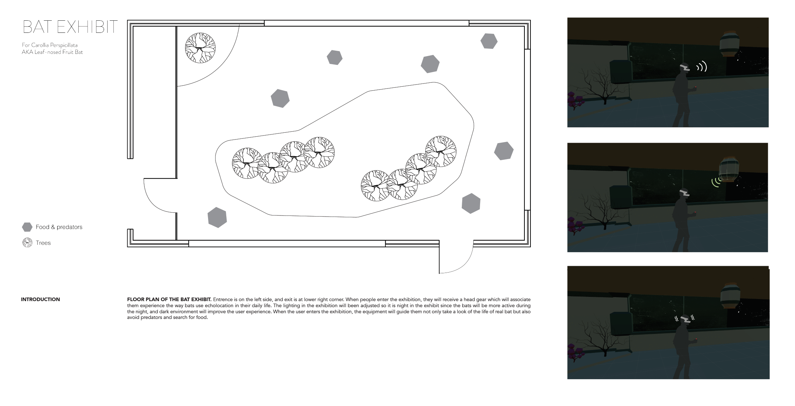
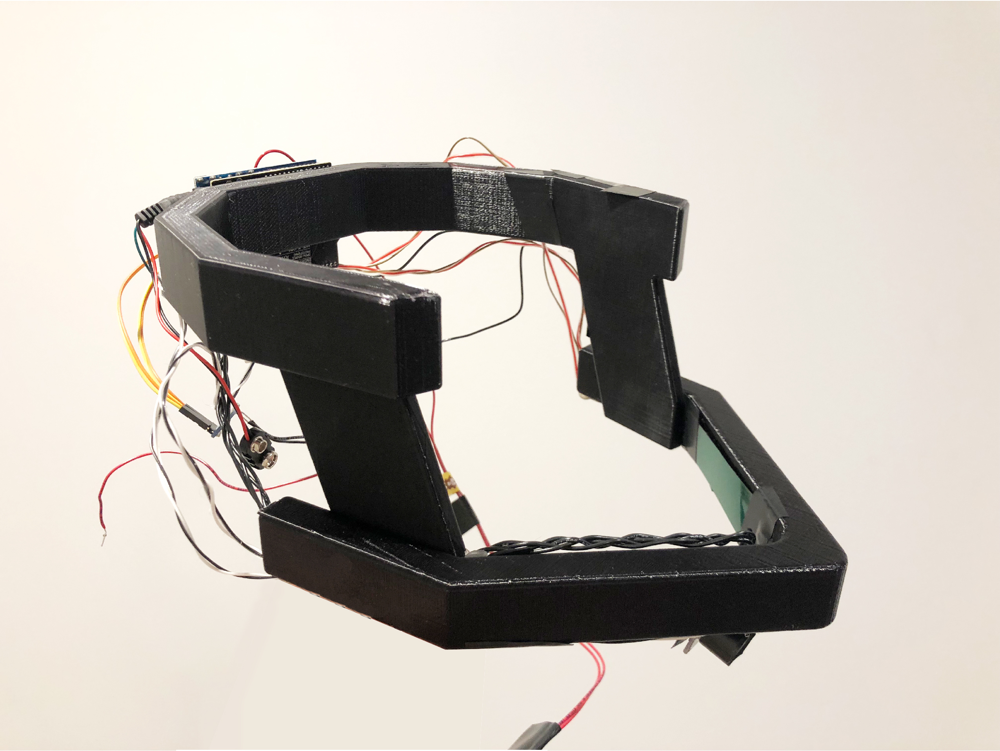
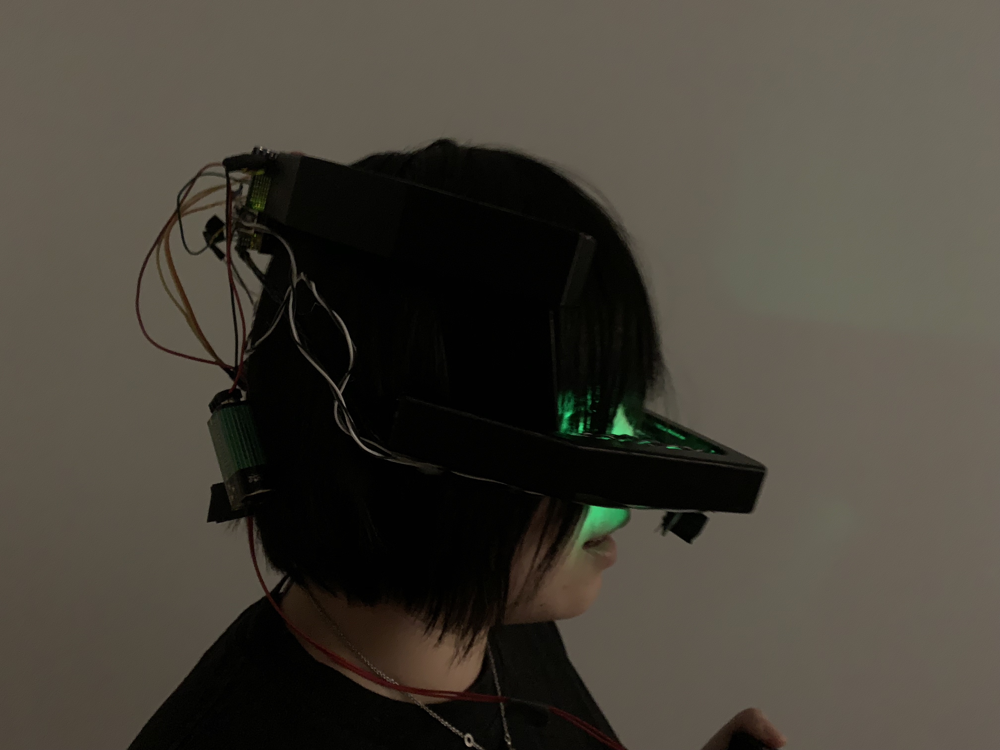
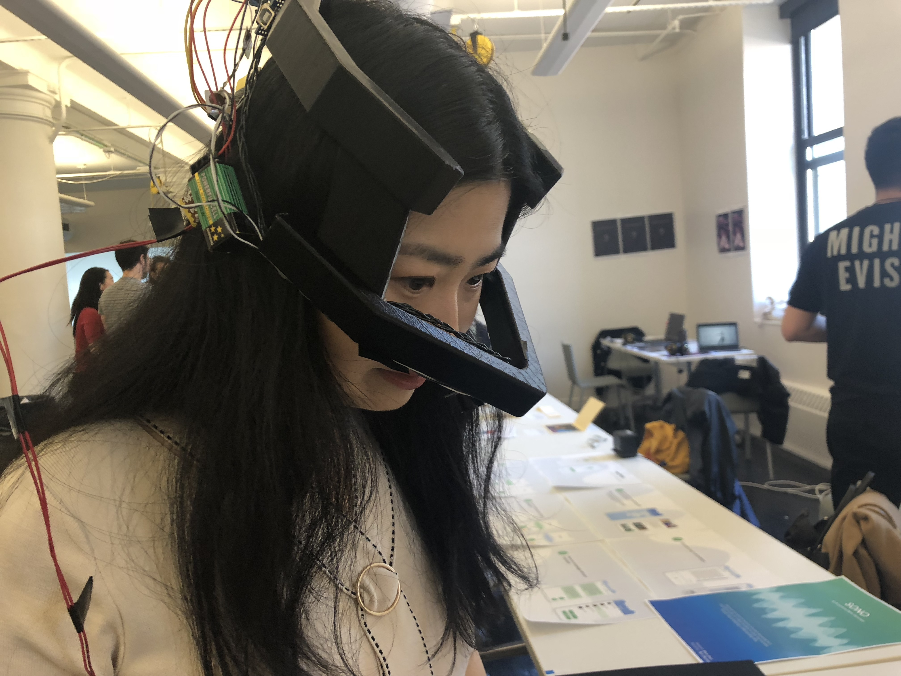
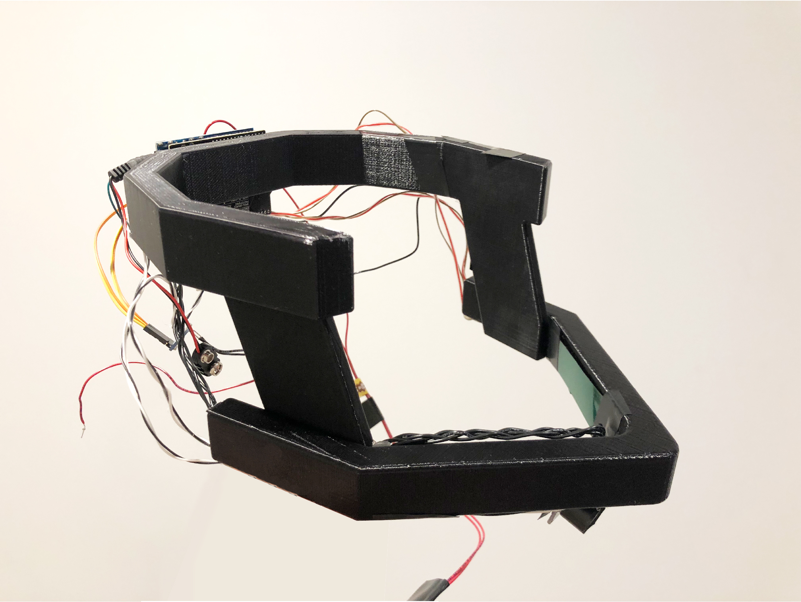
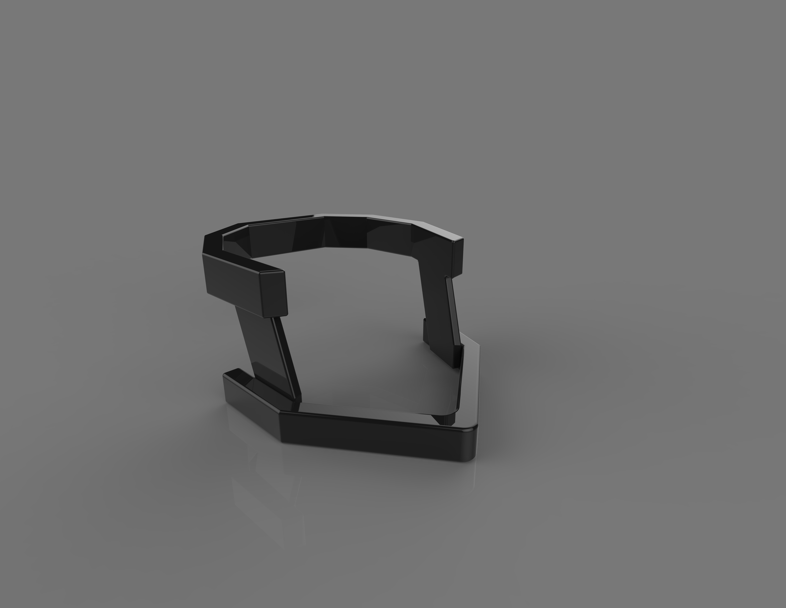
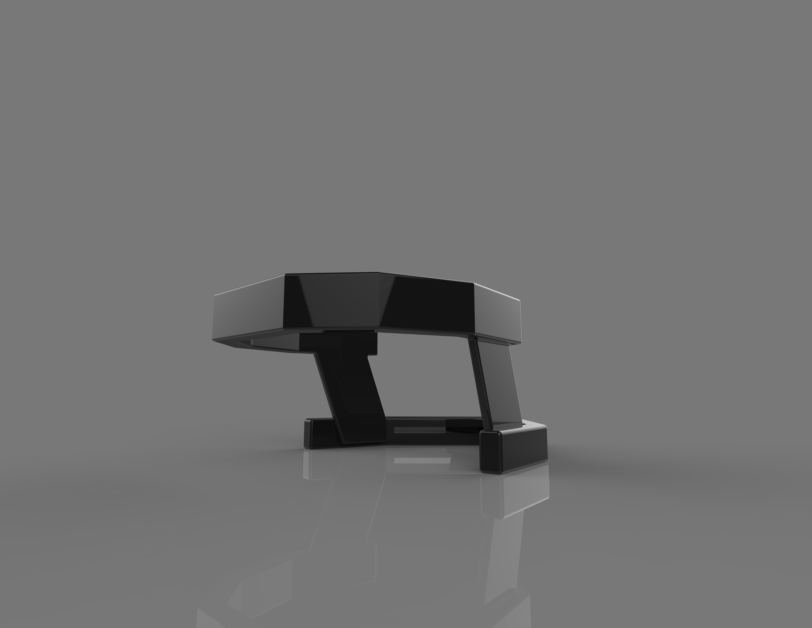
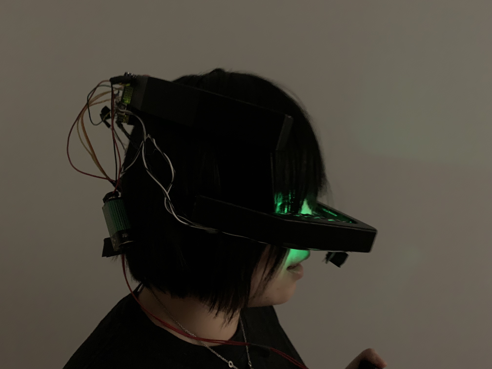
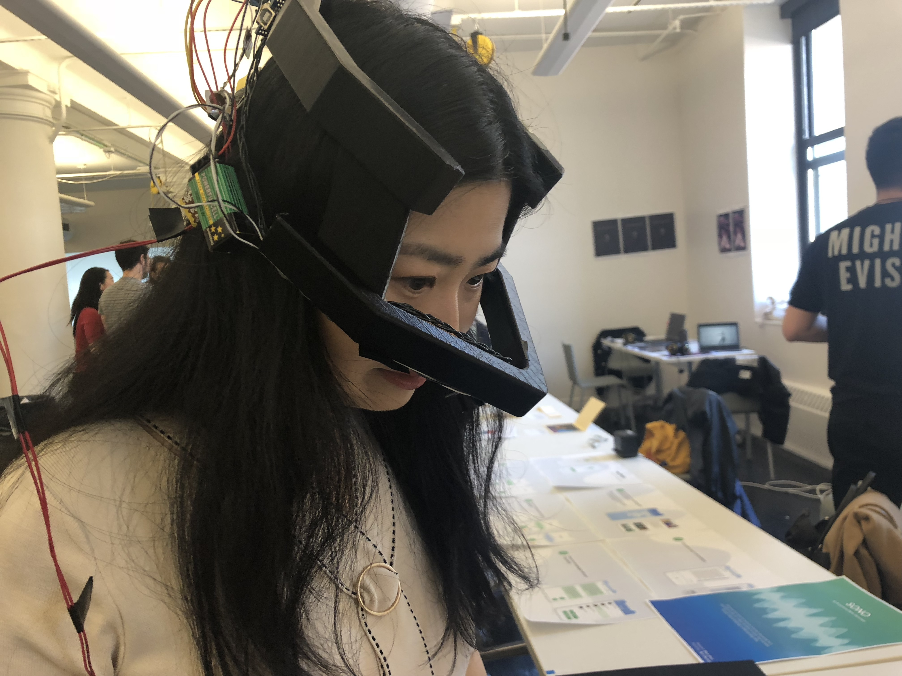

MS2Final
SPRING SEMASTER 2019
BATBEAT
Domain:
Multisensory experience, user experience.
I would like to explore ways to enhance sensory experience for zoo visitor in order to reform people's understand of animal and create empathy. Can multisensory experience help people start to consider animal's perspective and arise the awareness of protecting animals?
I would like to explore ways to enhance sensory experience for zoo visitor in order to reform people's understand of animal and create empathy. Can multisensory experience help people start to consider animal's perspective and arise the awareness of protecting animals?

BATBEAT is a multi-sensory experience designed for short-tail fruit bat (Carollia perspicillata) at Central Park Zoo located in New York. The exhibition is in a dark space. The lighting in the exhibition will been adjusted so it is night in the exhibit since the bats are more active during the night, and the dark environment will help people focus on the function of echolocation head gear offers. At the entrance of the exhibition, people will receive a head gear which will assist them experiencing the way bats use echolocation in their daily life. When people enter the exhibition, if people can get a good glimpse you might notice that the room for the bat is located at the left side of the exhibition. While people hang around, they could press the button which will trigger the function of echolocation. The button will be hold on their hand, and once they press the bottom, the light flow of the nose part of the helmet will flash dimly once to give visitor a hint that the ultrasonic is emitted successfully. In the exhibition, some barriers are set on the ground, wall and rooftop. When the sound waves hit one of the barriers they produce echoes. Visually, the barriers will also flash dimly once to tell visitor the existence of the barrier. The echo bounces off the object and returns to the helmet. At the same time, the mini vibrating motor which located at the four directions of the helmet starts working based on the location of the barrier. One circle of using echolocation happens in a short time period, but it will be much faster if it is bat that using echolocation technique

Background
The modern Zoo is a public place which maintains a collection of wild animals (some born in the zoo) in order to protect endangered species, support scientific study and educate the publics. Most zoos try to mimic the wild environment for both animals and visitors from vision and auditory perspective but is it possible to explore the way to enhance sensory experiences by considering all major senses, especially haptics. To explore these issues, I am developing a multi-sensory experience designed for the short-tail fruit bat (Carollia perspicillata) at the Central Park Zoo located in New York. Unlike traditional interaction between visitor and animal which is designed from the human's perspective, this approach guide people to explore the world from animal's perspective, the whole experience is designed to create empathy. In this exhibit, the zoo visitor will utilize their "impaired" vision, auditory and tactile sensation to become one of the bat and experience his typical lifestyle. When people enter the exhibition, they will receive a head gear which will help them experience the way bats use echolocation in their daily life in a dark environment. The equipment will guide them to take a look at the life of a real bat but also to explore the predators and search for food.
Prototype/ Iteration 1

Prototype/Iteration 2

Technique and implementation:

 
The whole experience could be separated in two parts: the head gear and exhibition design. In this section, I will spend more time in explaining the implementation of the head gear. The shape of the head gear is inspired from the bat's head and how bats use echolocation with his different organs on the head. Bats use throat to emit the ultrasound; the leaf nose expends the ultrasound; the two large ears receive the signal. Head gear will be the best choice to mimic bat's ability of echolocation. The model is built with 3D software, Solidworks and printed with 3D printer. The head gear is sculpted with ABS. Powered by an Arduino Uno and an Adafruit Trinket, the electronics are housed in a discrete enclosed backpack. For echolocation control, ultrasonic sensor is located at the tip of the nose and mainly used in this hear gear. It connects with a push bottom. The bottom offers the visitors freedom to emit ultrasound or not. At the side towards the face, there is a LED strip which will give the visitors hints while they emit ultrasound. There is one vibrating motor on each side of the head gear. The vibrating stands for the ultrasound bounced back from the barriers since the essence of the sound wave is vibrating. People could not only access sound wave through ear but also other part of the body. Figure (floor) is the floor plan of the exhibit. Bat's food and predators (fake) will be set at the hexagon area on the floorplan. They also attach led strip, motion sensor and ultrasound sensor and powered by Arduino Uno. When it detects user's ultrasound and motion, the led strip lights up with really dim light to give people hint of their position and shape.

Final Rendering


User Test
The first one is that the interaction between people and barrios in the exhibit could have more fun since one of the reason people come to the zoo is to have fun.
The second one is the shape of the button could be more intuitive. Instead of a regular shaped bottom, it could be more related to the experience.
The third part is about the demo during the Major Major. Since the limit of the time and space, the demo just offers some objects people used in daily to demo the function of the head gear. I will also focus on the fluent operation of the whole experience next time.
The second one is the shape of the button could be more intuitive. Instead of a regular shaped bottom, it could be more related to the experience.
The third part is about the demo during the Major Major. Since the limit of the time and space, the demo just offers some objects people used in daily to demo the function of the head gear. I will also focus on the fluent operation of the whole experience next time.
 
User Test (not from DT)
>